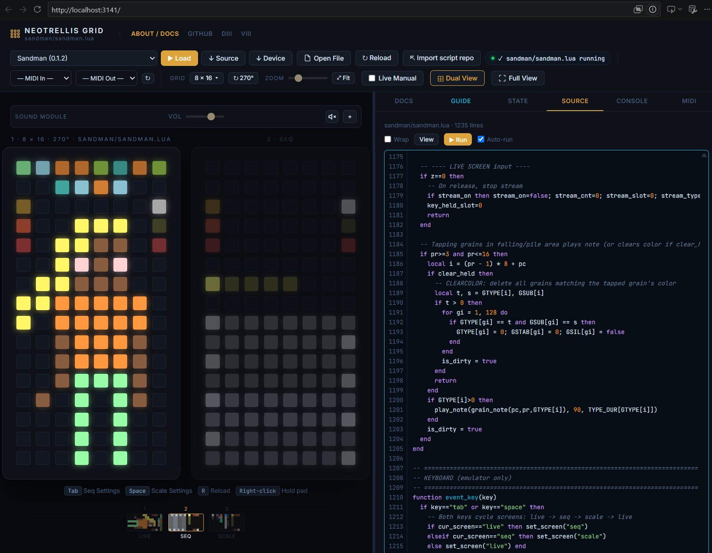

Walkthrough¶
The emulator's screen, part by part. To get it running, see Getting started.

Loading a script¶
The script list at the top has these groups:
- Recent: scripts you imported or opened, and scripts you edited, kept in this browser. ✕ Clear recent empties it.
- Music, Colour demos, Tests, Write your own: the scripts that come with the emulator.
- External scripts: scripts by other people, loaded from their own repositories each time.
- tehn: scripts from monome's iii-scripts.
Pick one and press ▶ Load. Other ways to load a script:
- Open File: a
.luafile from your computer. - ⇱ Import script repo: paste a GitHub or Codeberg address, such as
github.com/owner/repoorowner/repo. The emulator finds the.luafile and the README.
The other buttons:
- ↻ Reload (or R) starts the script again.
- ↓ Source downloads a bundled script as it is.
- ↓ Device downloads a copy without comments, ready to upload, and warns about code the device won't load (see Hardware vs. emulator).
The status bar next to them shows what's happening, including errors and warnings. Scripts can set their grid size and rotation; the emulator switches to it when they load.
The grid¶
- Click a pad to press it.
- Right-click holds a pad down; right-click again to let go. Use it for chords, or for a button you'd otherwise hold.
- Grid sets the size (8×8, 16×8, 8×16, 16×16), ↻ 0° rotates it, and the zoom slider and ⤢ Fit set how big it is on screen.
- Full View shows only the grid. Its buttons open the sound and zoom controls; Esc leaves.
- ◐ View sets the theme (dark or light; in light, unlit pads have a fine texture and lit ones are smooth, so even dim white LEDs stand out), the keys (NeoTrellis: the whole pad lights up; Mechatrellis: dark keys close together, with an LED at the top), the pad corners (square, slightly round, round), and the grid: Colour like a NeoTrellis grid, or Monochrome like a monome grid. In monochrome the script doesn't get
grid_led_rgb,grid_colorandgrid_color_intensity, so it runs its own fallback; the grid label says "mono".
The line under the grid shows the script's own keyboard shortcuts, if it lists any.
Scripts with more than one screen¶
Some scripts draw more than one screen, such as a main screen and a settings page.
- Small thumbnails of each screen sit under the grid. Click one to show that screen.
- ⊞ Dual View shows a second screen next to the main grid.
See multiple screens for how a script does this.
Live Manual¶
The Live Manual switch draws the script's controls over the grid: labels with lines to the pads they belong to. The labels come from comments in the script (see the script standard). A panel with the script's guide opens next to it.

The side panel¶
| Tab | Shows |
|---|---|
| Docs | The script's name, version and author, and its controls, read from the comments in the script |
| Guide | The script's README |
| State | The starting values of simple variables in the script |
| Source | The script's code, coloured, with line numbers; see below |
| Console | Everything the status bar showed. The script's own print output goes to the browser's developer console (F12) |
| MIDI | Every MIDI message going in and out; see below |
| Sound | The synth's sound and the drum kit; see Sound |
Drag the edge of the panel to make it wider.
Source¶
- Wrap wraps long lines. When a Lua error names a line, that line is marked, and the link at the top jumps to it.
- ✎ Edit opens the code in an editor. ▶ Run (or Ctrl+Enter) runs your version. Auto-run runs it again a second after you stop typing.
- Lines you changed are flagged: amber for changed, green for added, a red tick where lines were removed. Click a flag to put that part back, or ↺ Restore all. Ctrl+Z undoes a restore.
- Your edited version is kept under Recent. It isn't saved to a file: use ↓ Device or copy it out.
MIDI monitor¶
The buttons at the top filter what's shown: notes, CC, clock, other messages, incoming, outgoing. ⏸ Pause stops capturing (the list and the counters at the bottom) and ⌫ Clear empties it.
Sound¶
The emulator plays every note the script sends: drum notes on the drum kit, the others on the synths. Under the grid are the volume, the speaker button, ■ and ⚙ Sound, which opens the Sound tab (or, in Full View, the Sound window). Sound starts muted; the first click on the grid turns it on.
■ stops every note at once: it sends All Sound Off and All Notes Off on all 16 MIDI channels, so your MIDI devices stop too, and stops the emulator's own sound.
The sound also plays when a MIDI output is selected. Mute it to hear only your own synth.
The Sound tab¶

Along the top: a tab for each synth, Drums, + to add a synth, and Effects.
A synth plays the notes on its channel (or on any channel) that the drum kit doesn't take. Synths on the same channel play together, so two can be layered.
- Name and channel, ▶ Try to hear it, ✕ to remove it.
- Preset: a starting point (Soft keys, Warm pad, Glass bell, Pluck, Drifting lead, Plucked string, Hollow bass), or one you saved with Save as… (kept in this browser).
- Sound: Triangle, Sine, Soft saw, Hollow square, Wide pad, Pluck, FM bell, or a plucked string: String (bright, long) or Nylon (darker, shorter). The strings are Karplus–Strong: every note starts from a fresh burst of noise in a delay line tuned to the note, so no two plucks sound the same; harder notes (higher velocity) sound brighter.
- Envelope: drag the points. The first sets the attack, the second the decay and sustain level, the line after it the sustain level, the last the release.
- Drift puts each note a little out of tune and lets it wander slowly; Movement sweeps each note's filter slowly.
- Filter: a low-pass filter, which also follows a CC (74 to start with) on the synth's channel, from the script or from MIDI in.
- Level, and how much it sends to the reverb, delay and chorus.
Drums: seven drums (kick, snare, closed and open hat, clap, tom, perc), made by the emulator rather than recorded.
- Plays drum notes on channel …: notes on that channel (10 to start with, or any) play drums by their General MIDI number: 36 kick, 38 snare, 39 clap, 42 closed hat, 46 open hat, and so on. Notes 36 to 51, the usual 4×4 pad layout, are all covered. Other notes go to the synths.
- Plays a channel per drum: each drum plays on any note on its own channel (10 to 16 to start with).
- ▶ plays a drum, and flashes whenever the script plays it. ⚄ makes a new version of that drum; ⚄ All does all of them.
- The closed hat cuts off the open hat, as on a real kit. The kit has its own level and effect sends.
A script such as iiinvert sends its drums on channel 1: set the kit to channel 1 to hear them as drums.
Effects, shared by all synths and the kit:
- Reverb: Large room / hall (a short gap, then a tail that darkens) or Plate / spring (bright and dense straight away). A new decay applies when you let go of the slider.
- Delay: time and feedback.
- Chorus: rate and depth.
- Quality: Light plays fewer notes at once and has a shorter reverb, no chorus and no drift or movement, for phones. Auto picks light on phones.
- Stuck notes: a note the script never ends stops by itself after 30 s, or the time you pick (3 s to 1 min, or never).
⧉ Pop out moves the Sound controls into a window of their own, which you can drag by its title and resize from its corner; Dock puts them back. Everything in the Sound tab is kept in this browser.
MIDI¶
Pick a MIDI In and MIDI Out at the top (Chrome or Edge); ↻ looks for new devices. The first time, the browser asks whether the page may use MIDI devices: allow it, or the lists stay empty.
The lists show the MIDI devices your computer knows. To reach a DAW or another program on the same computer, most systems need a virtual MIDI port; how to make one depends on your system.
- Out sends the script's notes, CCs and clock.
- In goes to the script's
event_midi, for scripts that follow an external clock or a keyboard. For a script withoutevent_midi, incoming notes press pads instead.
If the same device is both input and output, a script can hear its own messages; the status bar warns when that happens.
Timing. The emulator keeps tempo, but each note or clock tick can be a few milliseconds early or late, and more when the tab is in the background. That's fine for playing along; for tight sync with other gear, let the script follow an external clock (MIDI In), or run it on the grid. More in Hardware vs. emulator.
Keyboard shortcuts¶
R always reloads the script. The line under the grid shows what the other keys do in the loaded script.
A script can handle keys itself, with event_key (see the script standard). Sandman and LeaveSeqr do: Tab moves to their next screen. For a script without event_key, these keys press fixed pads:
| Key | Presses |
|---|---|
| Tab | x1, y8, while the key is down |
| Space | x1, y8 |
| ↑ ← ↓ → | x15 y7, x14 y8, x15 y8, x16 y8 |
| 1, 2, 3, 4 | x10–x13, y3 |
| A | x1, y3 |
These match Serpentine's layout (ALT, the D-pad, tempo, autopilot). Keys don't reach the grid while you type in a text field, or with Ctrl or Cmd held.
Kept in your browser¶
The emulator remembers, in this browser only:
- the Recent list, including edited scripts
- presets that scripts save with
pset_write - the Source tab's Wrap and Auto-run settings
- the theme, keys, pad corners and grid mode from ◐ View
- the synths, drum kit, effects and quality settings, your saved presets, and where the Sound window was
Clearing the site's data in your browser removes them.